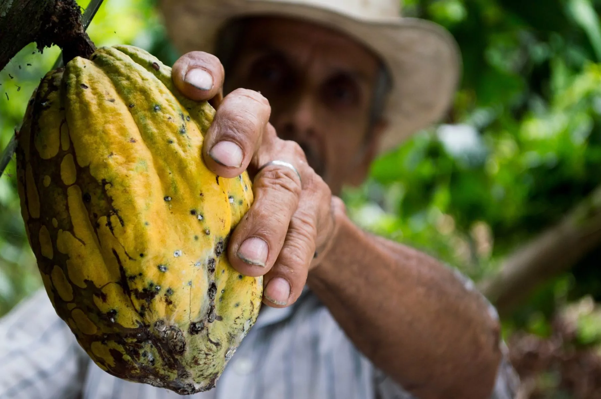

Detecting forest degradation by predicting biomass in cocoa plantations in Cote d'Ivoire

The AI model based on this dataset enables efficient and cost-effective remote monitoring of biomass changes. This is crucial for assessing reforestation success and detecting forest degradation due to cocoa farming. Also it reduces the need for extensive and expensive on-the-ground surveys. The dataset and the models developed from it aim to predict biomass levels in shaded regions of Côte d'Ivoire using a combination of GEDI, Sentinel-2 satellite imagery, and ground truth biomass measurements.
Data characteristics
[Auto-enriched from linked project resources]
Forest aboveground biomass (AGB) dataset for Cote d'Ivoire. 263 field plots measured between 2021 and 2023. Data Type: Tabular (CSV, also available as Parquet). Columns: identifiant (plot ID), dates (measurement date), Latitude (4.04 to 9.99), Longitude (-8.09 to -2.74), biomass_mg_ha (0.91 to 391 t/ha). Biomass calculated using allometric equations from field measurements of tree height, diameter at chest height, density, and species. Dataset size: 17.8 kB. License: CC BY 4.0.
Source: https://huggingface.co/datasets/data354/Africa_Biomass_dataset
Model characteristics
[Auto-enriched from linked project resources]
Dataset intended for building AGB estimation models using satellite imagery (GEDI, Sentinel-2) combined with ground truth measurements from 263 plots in Cote d'Ivoire. Input: satellite imagery paired with field data (tree height, diameter, density, species). Output: biomass prediction in tonnes per hectare (t/ha). Addresses the scarcity of locally-developed AGB estimation models for African tropical forests. License: CC BY 4.0.
Source: https://huggingface.co/datasets/data354/Africa_Biomass_dataset
How to use
The Africa Biomass Dataset enables immediate applications in biomass estimation, land-use monitoring, and carbon-stock analysis using existing remote sensing and machine-learning tools, making it useful for climate modelling, nature-based solutions, and sustainable land-management planning. Researchers can extend this work by integrating higher-resolution satellite imagery, adding ground-truth data, or fine-tuning models for country-specific ecosystems, though care must be taken to account for regional imbalances, sparse labels, and ecological variability, an ethical AI assessment is recommended before replication. The dataset opens opportunities for collaboration across climate scientists, AI researchers, and environmental agencies, and documentation on Hugging Face provides guidance for developers.
Datasets
Additional resources
About
Powered by / Provided by: Data354, Zindi
Catalyzed by: FAIR Forward - AI for All, GIZ
Financed by: BMZ
Authors: Elikplim Sabblah, Ruth Schmidt
Contact: Data354 (gabriel.fonlladosa@data354.co)